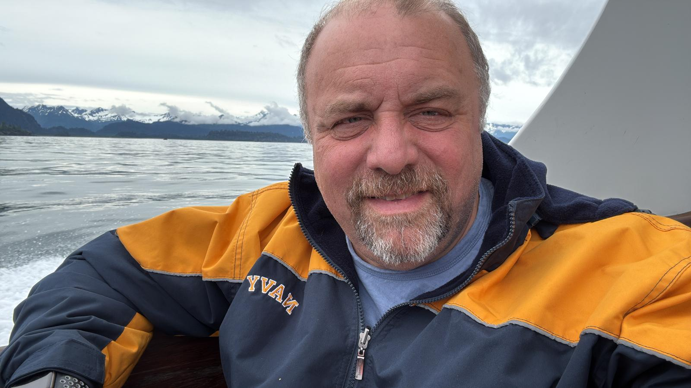
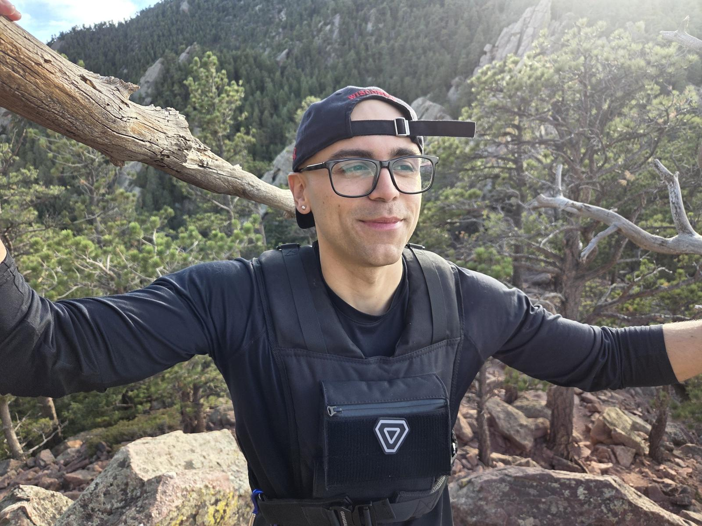
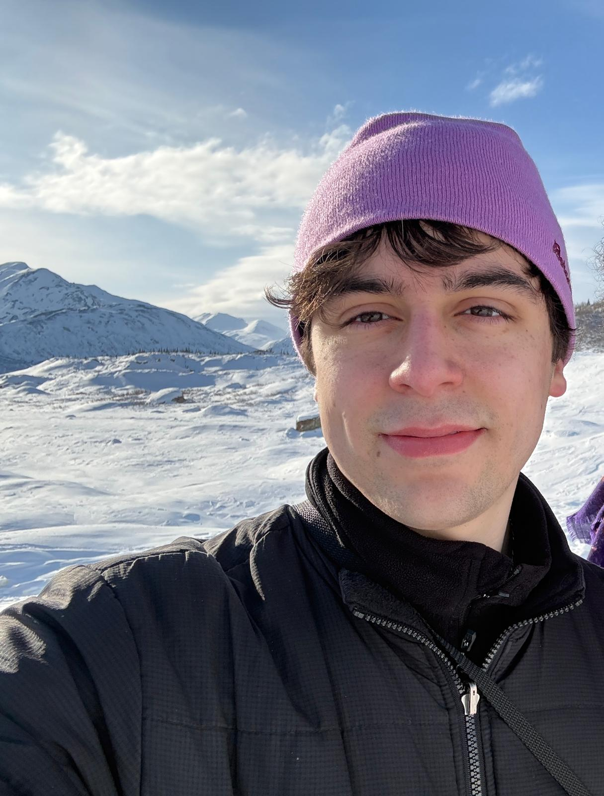

Rigor
Build around measurements, physical constraints, and reproducible methods.
Purpose & identity
VAER Systems is a scientific engineering company that turns physical understanding of the environment into operational technologies.
Mission
VAER Systems develops integrated sensing, computational, and predictive technologies to solve complex Earth-system problems.
The concept combines environmental measurements, electronics and communications, computational mathematics, and physics-informed modeling. Its distinguishing capability is the integration of the full chain, from observing the physical system to supporting operational decisions.
Values
Build around measurements, physical constraints, and reproducible methods.
A restrained, precise identity grounded in scientific substance.
Communicate uncertainty, operating limits, and the role of human judgment.
People
A multidisciplinary team spanning environmental instrumentation, computational physics, and predictive software.

Co-founder & Chief Atmospheric Scientist
Dr. Gilberto Javier Fochesatto is an atmospheric scientist and meteorologist with over two decades of research in boundary-layer meteorology, environmental sensing, and surface-atmosphere dynamics. As a Professor in the Department of Atmospheric Sciences at the University of Alaska Fairbanks, his career has focused on unraveling the physical mechanisms governing high-latitude, arctic, and complex mountain environments.
His background bridges electronic engineering—specializing in lasers, optical systems, and control—with a doctorate in Atmospheric Physics from Université Pierre et Marie Curie (Sorbonne) in Paris. Fochesatto has led pioneering field campaigns and research programs investigating boundary-layer turbulence, laser and lidar spectroscopy, thermodynamic profiling, and particulate matter trapping during persistent winter temperature inversions.
At VAER Systems, he leads atmospheric physics and sensing architecture, guiding custom environmental instrumentation, optical and thermodynamic profiling, and physical validation protocols across the company's core programs.

Co-founder & Lead Computational Scientist
Stefano Fochesatto (Giuliano Stefano Fochesatto) is an applied mathematician and computational scientist specializing in numerical analysis, high-performance computing, and scientific software architecture. Currently pursuing his Ph.D. in Computer Science at the University of Colorado Boulder within the PhyPID research group (advised by Dr. Jed Brown), his research focuses on variational inequalities, free-boundary problems, and physics-informed computational methods.
Holding a Master of Science in Mathematics from the University of Alaska Fairbanks, Stefano brings deep expertise in scalable finite element methods, numerical analysis, and high-performance scientific computing. His research includes developing novel adaptive mesh refinement (AMR) strategies for variational inequalities in glaciological modeling, multiphysics coupling for fluid-structure interactions, and uncertainty-aware architectures for large-scale geospatial Earth observations. With prior research at the U.S. Army Cold Regions Research and Engineering Laboratory (CRREL), his work bridges rigorous mathematical formulation with verifiable, high-performance software engineering.
At VAER Systems, he leads the computational physics and data assimilation infrastructure, architecting the numerical models, surface-wind field estimation algorithms, and predictive decision pipelines that translate raw physical observations into actionable operational guidance.

Co-founder & Lead Hardware Developer
Luca Fochesatto is an Electrical Engineering student at the University of Alaska Fairbanks and the lead hardware developer at VAER Systems, bringing specialized expertise in scientific instrumentation and low-level embedded design.
With a strong background spanning advanced sensor integration, complex hardware communications, and decentralized networking architectures, Luca drives the technical development of the company’s core platforms to ensure rigorous performance from bare-metal silicon to the server level.
Technical dialogue
Discuss sensing requirements, physical modeling, and validation priorities.